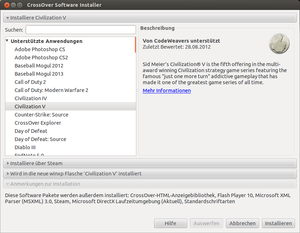

CrossOver
Dieser Artikel wurde für die folgenden Ubuntu-Versionen getestet:
Ubuntu 14.04 Trusty Tahr
Zum Verständnis dieses Artikels sind folgende Seiten hilfreich:
CrossOver Linux  ist eine kommerzielle Variante von Wine des Herstellers CodeWeavers . Mit dieser Software ist es möglich, eine Vielzahl von Windows-Anwendungen unter Ubuntu zu installieren und auszuführen. Die installierte Windows-Software wird auf dieselbe Art und Weise wie unter Windows aktiviert. Unter anderen werden Microsoft Office XP und 2003, aber auch Adobe Photoshop unterstützt. Eine genaue Liste, welche Windows-Anwendungen mit Hilfe von CrossOver unter Ubuntu zum Laufen gebracht werden können, findet man auf der Kompatibilitätsseite von Codeweavers.
ist eine kommerzielle Variante von Wine des Herstellers CodeWeavers . Mit dieser Software ist es möglich, eine Vielzahl von Windows-Anwendungen unter Ubuntu zu installieren und auszuführen. Die installierte Windows-Software wird auf dieselbe Art und Weise wie unter Windows aktiviert. Unter anderen werden Microsoft Office XP und 2003, aber auch Adobe Photoshop unterstützt. Eine genaue Liste, welche Windows-Anwendungen mit Hilfe von CrossOver unter Ubuntu zum Laufen gebracht werden können, findet man auf der Kompatibilitätsseite von Codeweavers.
Mit Version 6 wurde das ehemalige "CrossOver Office" in CrossOver umbenannt. Dieses Programm ist eine proprietäre Software, die auf Wine basiert. Der Sourcecode von CrossOver selbst steht unter der LGPL jedoch sieht der Entwicklungsprozess von CrossOver vor, dass Patches im Laufe der Zeit zuerst in wine integriert werden.
Eine kostenlose und quelloffene Alternative zu CrossOver ist PlayOnLinux bzw. Wine.
Installation¶
CrossOver 6.0 oder neuer¶
Die neuen Versionen von CrossOver kommen gleich in einem .deb-Paket daher, das einfach über die Paketverwaltung installiert wird [1].
Hinweis!
Fremdpakete können das System gefährden.
Ein anderer Weg, der noch auf der Homepage des Herstellers beschrieben ist, ist der folgende. Zuerst muss man ein Terminal öffnen [2] und in den Ordner wechseln, in dem sich das Installationsskript (install-crossover-pro.sh) befindet. Die Installation wird dann mit folgendem Befehl gestartet:
sudo -H sh install-crossover-pro.sh
Die weitere Installation wird in deutschsprachigen, selbsterklärenden Menüs gesteuert. Nach der Installation sollte man Ubuntu neu starten, auch wenn dies von CrossOver nicht angezeigt wird. Nach dem Neustart des Computers erscheint ein CrossOver-Menü bei GNOME unter "Anwendungen" bzw. bei KDE im "K-Menü". Von hier aus lassen sich Windows-Programme installieren.
Die Windows-Software wird in das eigene Benutzer-Verzeichnis (/home/benutzername) in den versteckten Ordner .cxoffice installiert.
Wenn das .deb Paket installiert wurde, wird die Software nach /opt installiert.
Bedienung¶
Installation von Windows-Software¶

Von Codeweavers oder der Community offiziell unterstützt¶
Zu erst öffnet man CrossOver:
"Windows Software installieren"
Dann legt man die Installations-CD in das CD-ROM/DVD-Laufwerk und wählt in dem sich öffnenden Menü (siehe Bild) die Software aus und klickt auf "weiter". Alle weiteren Installationsschritte sind ausgezeichnet in deutscher Sprache erklärt.
Andere¶
Software, die nicht von CodeWeavers oder der Community offiziell unterstützt wird, kann einfach über die Installationsdatei installiert werden, sofern man Glück hat und diese auch wirklich lauffähig ist.
Eine zweite Möglichkeit ist, das Installationsmenü (wie bereits beschrieben) zu öffnen und dort die Option "Nicht unterstütze Software installieren" anzuwählen.
Windows-Programme starten¶
Um installierte Windows-Software zu starten, öffnet man das entsprechende Menü in der Benutzeroberfläche:
"Windows-Anwendungen -> Programme -> installiertes Programm wählen -> Programm starten"
Deinstallation von Windows-Programmen¶
Unter der Option "Flaschen verwalten" lassen sich Windows-Programme deinstallieren.
Weitere Informationen¶
Für weitere Fragen steht das mitinstallierte englischsprachige Handbuch unter der Option "Dokumentation" (bzw. im Verzeichnis ~/.cxoffice/doc ) für den Anwender bereit, allerdings erst nach abgeschlossener Installation. Das Handbuch ist im HTML-Format, man benötigt also einen Webbrowser, um das Handbuch lesen zu können.
Wenn z.B. bei Xfce CrossOver nicht im Menü auftaucht, kann CrossOver mit den installierten Programmen durch Ausführen der Datei ~/.cxoffice/bin/cxsetup verwaltet werden. Die Datei cxrun im selben Verzeichnis kann benutzt werden, um eine Windows-Anwendung direkt auszuführen.
Sicherheit¶
Ubuntu hat ein grundlegend anderes Sicherheitskonzept als Windows. Dazu kommt, dass Crossover keine an Linux angepasste Kopie von Windows ist. Crossover ist ein Übersetzer zwischen beiden Welten. Daher ist es unwahrscheinlich, dass Viren und Trojaner sich im Ubuntu-System festsetzen könnten, selbst wenn sie über Crossover ausführbar wären.
Nichtsdestotrotz darf man nicht vergessen, dass per Crossover ausgeführte Windows-Anwendungen Lese- und Schreibzugriff auf das eigene Homeverzeichnis haben. In der Theorie wären simple Schadprogramme denkbar, die beispielsweise Daten im Homeverzeichnis löschen könnten.
Ob nun ein Virenscanner solche Schädlinge entdecken könnte, ist fraglich. Es bleibt wie immer nur der Hinweis, Software ausschließlich aus vertrauenswürdigen Quellen zu installieren. Wer meint, dass man kopierte Software mit fragwürdigen Crack-Programmen ruhigen Gewissens unter Linux ausführen könne, irrt.

- Erstellt mit Inyoka
-
 2004 – 2017 ubuntuusers.de • Einige Rechte vorbehalten
2004 – 2017 ubuntuusers.de • Einige Rechte vorbehalten
Lizenz • Kontakt • Datenschutz • Impressum • Serverstatus -
Serverhousing gespendet von